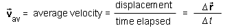
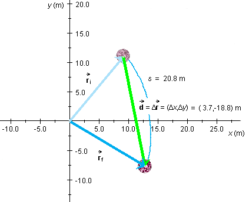

denotes the change in the position vector, i.e., the
displacement, of the mass point during the given time interval of
duration Δt.
denotes the change in the position vector, i.e., the
displacement, of the mass point during the given time interval of
duration Δt.
The average velocity of a mass point during a given time interval is defined as the ratio of the masspoint's displacement and the time elapsed during the time interval.
Definition of average velocity in symbols:

In this definition, Δ denotes the change in the position vector, i.e., the
displacement, of the mass point during the given time interval of
duration Δt.
Average velocity is a vector quantity because it is the ratio of
a vector and a scalar. The direction of the average velocity vector
is that of the displacement vector Δ.
The SI-unit of average velocity is m/s.
Note. The magnitude of the average velocity is denoted
| av|,
not vav. The latter symbol denotes the
average speed, which is defined as the ratio
s/Δt of distance s traveled and time
elapsed and is in general not equal to the magnitude of the average
velocity which is equal to |Δ|/Δt. The reason is that distance
traveled is measured along the path actually traveled by the
masspoint while the magnitude of the displacement is equal to the
straight-line distance between the positions of the masspoint at the
beginning and end of the given time interval. See the illustration
below.
av|,
not vav. The latter symbol denotes the
average speed, which is defined as the ratio
s/Δt of distance s traveled and time
elapsed and is in general not equal to the magnitude of the average
velocity which is equal to |Δ|/Δt. The reason is that distance
traveled is measured along the path actually traveled by the
masspoint while the magnitude of the displacement is equal to the
straight-line distance between the positions of the masspoint at the
beginning and end of the given time interval. See the illustration
below.

The initial and final positions of a red ball are indicated by the
blue position vectors if| is equal to the magnitude of the
pale green displacement vector while the distance s
traveled by the ball is measured along the curved blue path taken
by the ball in going from the initial to the final position.